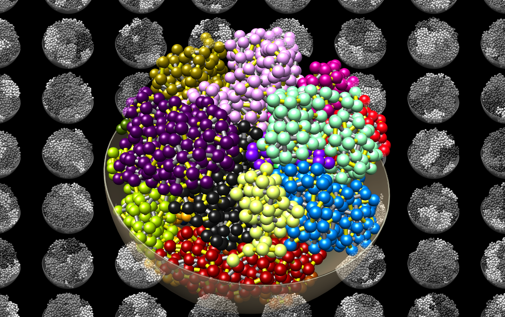

chromflock

Latest version: 0.4.4
For changes, see the version history
Warning
The documentation is not up to date and many aspects are missing. Please see the code to really know what is going on.

Latest version: 0.4.4
For changes, see the version history
Warning
The documentation is not up to date and many aspects are missing. Please see the code to really know what is going on.